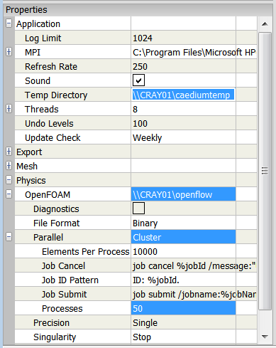

Microsoft Windows HPC Server 2008 Cluster Configuration
Update: This feature is deprecated in the latest version of Caedium.
Thanks to sponsorship provided by the Microsoft DPE team, Caedium can perform RANS Flow CFD simulations in parallel on a cluster running Microsoft Windows HPC Server 2008. When configured correctly a parallel simulation running on a cluster will perform significantly faster (potentially many times faster) than the equivalent simulation performed in serial (i.e., non-parallel). Here we describe how to configure Caedium to perform parallel simulations on a cluster running Windows HPC Server 2008.
Assumptions
- You have access to a cluster running Microsoft Windows HPC Server 2008.
- You have saved your user ID and password with the Microsoft HPC Cluster Manager. If not then:
- Launch the HPC Pack Cluster Manager
- Select Node Management
- In the Nodes list select the HeadNode Template
- In the Node Actions click Run Command...
- In the Run a Command dialog enter dir in the Command line text entry
- Click Run
- Enter your user ID and password, check the option Remember my password and click OK
- You have downloaded, installed and activated Caedium RANS Flow or Caedium Professional on the head-node of the cluster, e.g., CRAY01. Note do not install Microsoft MPI - it should already be available on the cluster.
- You are familiar with Caedium essentials.

Cluster Preferences
Procedure
You only need to set the following Caedium preferences once - they will persist across all subsequent Caedium simulations.
- Set up the Caedium temporary directory by creating a new directory on the node where Caedium is installed, e.g., C:\caediumtemp and share the directory, e.g., as \\CRAY01\caediumtemp
- The OpenFOAM distribution (executables and libraries) must be available to all nodes in the cluster, so on the node where Caedium is installed share the default OpenFOAM location, e.g., share C:\Program Files\Caedium\openflow as \\CRAY01\openflow
- In Caedium select the File Toolbar and click the Preferences button
 . In the Properties Panel set the Application->Temp Directory preference to the shared Caedium temporary directory, e.g., \\CRAY01\caediumtemp
. In the Properties Panel set the Application->Temp Directory preference to the shared Caedium temporary directory, e.g., \\CRAY01\caediumtemp - Set the Physics->OpenFOAM preference to the shared OpenFOAM directory, e.g., \\CRAY01\openflow
- Set the Physics->OpenFOAM->Parallel preference to Cluster, then expand the preference and set Processes to the maximum number of processes available to Caedium to perform parallel simulations, e.g., 50
For more on how to configure Caedium for parallel simulations see "Parallel Configuration."
Feedback
Questions? Ideas? Problems?